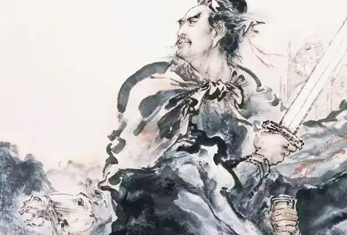

辛弃疾（1140年—1207年），原字坦夫，后改字幼安，中年后别号稼轩居士。山东东路济南府历城县（今山东省济南市历城区）人。南宋官员、将领、文学家，豪放派词人，有"词中之龙"之称。与苏轼合称"苏辛"，与李清照并称"济南二安"。
辛弃疾一生以恢复为志，以功业自许，却命运多舛、壮志难酬。但他始终没有动摇恢复中原的信念，而是把满腔激情和对国家兴亡、民族命运的关切、忧虑，全部寄寓于词作之中。其词艺术风格多样，以豪放为主，风格沉雄豪迈又不乏细腻柔媚之处。其词题材广阔又善化用前人典故入词，抒写力图恢复国家统一的爱国热情，倾诉壮志难酬的悲愤，对当时执政者的屈辱求和颇多谴责；也有不少吟咏祖国河山的作品。

醉里挑灯看剑，梦回吹角连营。八百里分麾下炙，五十弦翻塞外声，沙场秋点兵。
马作的卢飞快，弓如霹雳弦惊。了却君王天下事，赢得生前身后名。可怜白发生！
东风夜放花千树，更吹落、星如雨。宝马雕车香满路。凤箫声动，玉壶光转，一夜鱼龙舞。
蛾儿雪柳黄金缕，笑语盈盈暗香去。众里寻他千百度，蓦然回首，那人却在，灯火阑珊处。
楚天千里清秋，水随天去秋无际。遥岑远目，献愁供恨，玉簪螺髻。落日楼头，断鸿声里，江南游子。把吴钩看了，栏杆拍遍，无人会，登临意。
休说鲈鱼堪脍，尽西风，季鹰归未？求田问舍，怕应羞见，刘郎才气。可惜流年，忧愁风雨，树犹如此！倩何人唤取，红巾翠袖，揾英雄泪！
© 版权所有 someone@263.net